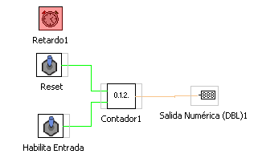
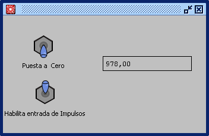

Función RETARDO (Patrón de Tiempo)
Esta función prmite modificar el patron de teimpo en unidades de milisegundos.
Con el bloque retardo se consigue modificar el patrón de tiempo del paso del contador.
